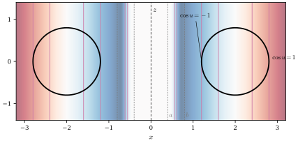
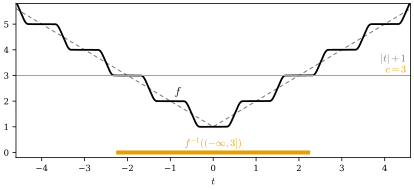

12.5 단위분할의 응용
이 절의 목표
- 닫힌집합의 범프 함수(매끄러운 우릉 보조정리)를 단위분할로 만들 수 있다.
- 닫힌집합 위에서 국소적으로 매끄러운 함수를 다양체 전체의 매끄러운 함수로 늘이는 확장 보조정리를 증명하고, 정칙곡면 위의 매끄러운 함수를 \(\R^3\) 전체로 늘일 수 있다.
- 모든 매끄러운 다양체에 매끄러운 소진 함수가 있음을 보이고, 그 뜻을 설명할 수 있다.
선수 지식
동기
12.4절에서 모든 열린덮개에 종속된 단위분할이 있음을 증명했다. 이제 그 쓸모를 보자. 단위분할은 “국소적으로 만든 것을 전체로 이어 붙이는” 도구다. 이 절에서는 세 가지를 이어 붙인다. 닫힌집합 근처의 \(1\)과 먼 곳의 \(0\)(범프 함수), 닫힌집합 위의 국소적인 확장들(확장 보조정리), 그리고 컴팩트 소진의 번호(소진 함수)다.
특히 6장에서 남긴 질문에 답한다. 정칙곡면 위의 매끄러운 함수는 점마다 근처에서 \(\R^3\)의 매끄러운 함수의 제한이었다(연습 6.3.7). 이 국소적인 확장들을 이어 붙여 \(\R^3\) 전체의 매끄러운 함수 하나로 만들 수 있는가? 곡면이 \(\R^3\)에서 닫혀 있으면 그렇다(따름정리 12.5.5). 그림 12.5.1은 원환면 위의 함수 \(\cos u\)를 그렇게 늘인 것이다.

닫힌집합의 범프 함수
이 절에서 \(M\)은 매끄러운 다양체이고, 경계가 있어도 된다. 명제 12.3.7은 컴팩트 집합의 범프 함수를 만들었다. 단위분할을 쓰면 컴팩트성 가정을 뺄 수 있다.
정리 12.5.1 (닫힌집합의 범프 함수, 매끄러운 우릉 보조정리). \(A \subseteq M\)이 닫힌집합이고 \(U \subseteq M\)이 \(A\)를 포함하는 열린집합이면, \(U\)에 받침을 둔 \(A\)의 범프 함수가 있다. 곧 매끄러운 \(\psi\colon M \to [0, 1]\)이 있어서 \(A\) 위에서 \(\psi \equiv 1\)이고 \(\supp\psi \subseteq U\)이다.
증명. \(A\)가 닫혀 있으므로 \(M \setminus A\)는 열려 있고, \(\{U, M \setminus A\}\)는 \(M\)의 열린덮개다. 정리 12.4.12에 의해 이 덮개에 종속된 단위분할 \(\{\psi_U, \psi_{M \setminus A}\}\)가 있다. \(\psi = \psi_U\)로 두면 \(0 \le \psi \le 1\)이고 \(\supp\psi \subseteq U\)이다. \(p \in A\)이면 \(\supp\psi_{M \setminus A} \subseteq M \setminus A\)이므로 \(\psi_{M \setminus A}(p) = 0\)이고, 따라서 \(\psi(p) = 1 - \psi_{M \setminus A}(p) = 1\)이다.
따름정리 12.5.2 (서로소인 닫힌집합의 분리). \(A\), \(B\)가 \(M\)의 서로소인 닫힌집합이면 매끄러운 \(f\colon M \to [0, 1]\)이 있어서 \(A\) 위에서 \(f \equiv 1\), \(B\) 위에서 \(f \equiv 0\)이다.
증명. \(U = M \setminus B\)는 \(A\)를 포함하는 열린집합이다. 정리 12.5.1의 \(\psi\)는 \(A\)에서 \(1\)이고, \(\supp\psi \subseteq M \setminus B\)이므로 \(B\)에서 \(0\)이다.
이름의 “우릉”(Urysohn)은 위상수학의 우릉 보조정리에서 왔다. 그 보조정리는 연속함수로 같은 일을 하는데, 여기서는 매끄러운 함수로 했다. 예를 들어 \(\R\)에서 닫힌집합 \(A = [0, \infty)\)와 \(U = (-1, \infty)\)에 대해 \(\psi(t) = k(2t + 1)\)이 그런 함수다(\(k\)는 12.3절의 계단). \(t \ge 0\)이면 \(2t + 1 \ge 1\)이므로 \(\psi = 1\)이고, \(t \le -1/2\)이면 \(\psi = 0\)이다. 그 받침 \([-1/2, \infty)\)는 컴팩트하지 않고, 컴팩트할 수도 없다(비예 12.3.10(b)).
확장 보조정리
닫힌집합 \(A\) 위에서만 정의된 함수가 “매끄럽다”는 것은 \(A\)의 각 점 근처에서 매끄러운 함수로 늘일 수 있다는 뜻으로 읽는 것이 자연스럽다. \(\R^n\)의 부분집합에 대해서는 이것이 정의 11.5.7이었다. 이 가정 아래에서 국소적인 확장을 하나로 이어 붙인다.
정리 12.5.3 (확장 보조정리, extension lemma). \(A \subseteq M\)이 닫힌집합이고 \(f\colon A \to \R^k\)라 하자. 모든 \(p \in A\)에 대하여 \(p\)의 열린 근방 \(W_p \subseteq M\)과 매끄러운 \(f_p\colon W_p \to \R^k\)가 있어서 \(W_p \cap A\) 위에서 \(f_p = f\)라고 가정하자. 그러면 \(A\)를 포함하는 모든 열린집합 \(U\)에 대하여, 매끄러운 \(F\colon M \to \R^k\)가 있어서 \(A\) 위에서 \(F = f\)이고 \(\supp F \subseteq U\)이다.
이 정리가 말하는 것. 닫힌집합 위에서 국소적으로 매끄러운 함수는 다양체 전체의 매끄러운 함수의 제한이다. 더구나 확장의 받침을 \(A\)의 원하는 근방 안에 가둘 수 있다.
증명 아이디어: 국소적인 확장 \(f_p\)들의 정의역과 \(A\)의 여집합으로 이루어진 열린덮개에 단위분할을 잡고 \(F = \sum_p \psi_p f_p\)로 둔다. \(A\) 위에서는 \(f_p\)들이 모두 \(f\)와 같으므로 가중평균도 \(f\)다.
증명. \(W_p\)를 \(W_p \cap U\)로 바꾸어도 가정이 성립하므로 처음부터 \(W_p \subseteq U\)라 해도 된다. \(\{W_p\}_{p \in A} \cup \{M \setminus A\}\)는 \(M\)의 열린덮개다. 정리 12.4.12로 이 덮개에 종속된 단위분할 \(\{\psi_p\}_{p \in A} \cup \{\psi_0\}\)을 잡는다(\(\psi_0\)이 \(M \setminus A\)에 대응한다).
각 항이 매끄러움. \(p \in A\)마다 \(\psi_p f_p\)를 \(W_p\) 위에서는 곱으로, \(M \setminus \supp\psi_p\) 위에서는 \(0\)으로 정의한다. 두 열린집합은 \(M\)을 덮고(\(\supp\psi_p \subseteq W_p\)) 겹치는 곳에서 두 정의가 모두 \(0\)이므로, 이것은 \(M\) 위의 매끄러운 함수이고(명제 12.1.7(c)) 받침은 \(\supp\psi_p\)에 들어 있다.
합. \(\{\supp\psi_p\}\)가 국소 유한하므로 \(F = \sum_{p \in A} \psi_p f_p\)는 매끄럽다(보조정리 12.4.3). \(a \in A\)라 하자. \(\supp\psi_0 \subseteq M \setminus A\)이므로 \(\psi_0(a) = 0\)이고 \(\sum_p \psi_p(a) = 1\)이다. \(\psi_p(a) \ne 0\)이면 \(a \in \supp\psi_p \subseteq W_p\)이므로 \(f_p(a) = f(a)\)이다. 따라서
이다. 받침. \(\{F \ne 0\} \subseteq \bigcup_p \supp\psi_p\)이고, 오른쪽은 국소 유한한 닫힌집합들의 합집합이므로 닫혀 있다(보조정리 12.4.2(b)). 따라서 \(\supp F \subseteq \bigcup_p \supp\psi_p \subseteq \bigcup_p W_p \subseteq U\)이다.
특히 \(A\)가 닫혀 있고 \(f\)가 \(A\)를 포함하는 열린집합에서 매끄러우면(\(f_p = f\)로 두면 된다) \(f|_A\)는 \(M\) 전체의 매끄러운 함수로 늘어난다. 두 가정은 모두 필요하다.
비예 12.5.4 (가정을 빼면). (a) 닫혀 있지 않은 집합. \(A = (0, \infty) \subseteq \R\)과 \(f(t) = 1/t\)를 보자. \(f\)는 열린집합 \(A\)에서 매끄러우므로 국소적 확장의 가정은 성립한다. 그러나 \(A\)는 \(\R\)에서 닫혀 있지 않고, \(f\)는 \(\R\) 위의 연속함수의 제한조차 아니다. 연속함수는 \(0\)의 근방에서 유계인데 \(f(t) \to \infty\) (\(t \to 0^+\))이기 때문이다.
(b) 한 점에서라도 국소적 확장이 없으면. \(A = \{0\} \cup \{1/j : j \ge 1\} \subseteq \R\)은 닫혀 있다. \(f(1/j) = (-1)^j\), \(f(0) = 0\)이라 하자. \(1/j\)는 \(A\)의 고립점이므로 그 근처에서 상수함수가 국소적 확장이다. 그러나 \(0\)의 근처에서는 확장이 없다. \(0\)의 근방에서 정의된 연속함수 \(F\)가 \(A\) 위에서 \(f\)와 같다면 \(F(1/j) = (-1)^j\)가 \(F(0) = 0\)으로 수렴해야 하기 때문이다. 결론도 성립하지 않는다.
이제 6장의 질문으로 돌아가자. 연습 6.3.7은 정칙곡면 \(S\) 위의 매끄러운 함수 \(f\)가 모든 점 \(p\)에서, \(p\)를 포함하는 \(\R^3\)의 열린집합 \(O'\)과 매끄러운 \(F\colon O' \to \R\)를 가져서 \(O' \cap S\) 위에서 \(F = f\)임을 보였다. 이것이 정리 12.5.3의 국소적 확장 가정이다.
따름정리 12.5.5 (정칙곡면 위의 함수의 확장). \(S \subseteq \R^3\)이 \(\R^3\)의 닫힌집합인 정칙곡면이고 \(f\colon S \to \R\)가 매끄러우면(정의 6.3.5, 또는 명제 12.1.11에 의해 다양체로서), \(S\) 위에서 \(F = f\)인 매끄러운 \(F\colon \R^3 \to \R\)가 있다. \(S\)가 컴팩트하면 \(F\)의 받침도 컴팩트하게 고를 수 있다.
증명. 정리 12.5.3을 \(M = \R^3\), \(A = S\)에 쓴다. 국소적 확장은 연습 6.3.7이 준다. \(U = \R^3\)으로 두면 첫째 주장을 얻는다. \(S\)가 컴팩트하면 유계이므로 어떤 공 \(B_\rho(0)\)에 들어 있다. \(U = B_\rho(0)\)으로 두면 \(\supp F\)는 \(\overline{B}_\rho(0)\)의 닫힌부분집합이므로 컴팩트하다.
구면 \(S^2(r)\), 원환면 \(T_{R,r}\), 원기둥은 닫힌 정칙곡면이다. 정칙값의 역상 \(f^{-1}(c)\)(6.5절)은 \(f\)가 \(\R^3\) 전체에서 정의되어 있으면 연속함수에 의한 닫힌집합의 역상이므로 닫혀 있다. 반면 \(xy\) 평면의 열린 원판은 닫혀 있지 않은 정칙곡면이고, 따름정리 12.5.5의 결론이 성립하지 않을 수 있다(연습 12.5.4).
예 12.5.6 (원환면 위의 \(\cos u\)). \(0 \lt r \lt R\)이고 \(T_{R,r}\)가 원환면이라 하자(예 6.5.8). 기준 매개화 \(\mathbf{x}(u, v)\)의 점에서 \(\rho = \sqrt{x^2 + y^2} = R + r\cos u\)이므로, 함수 \(f = (\rho - R)/r\)는 \(T_{R,r}\) 위에서 \(f \circ \mathbf{x} = \cos u\)이다. \(f\)는 열린집합 \(O = \{(x, y) \ne (0, 0)\}\)에서 정의된 매끄러운 함수의 제한이지만, 식 \((\rho - R)/r\)은 \(z\)축에서 매끄럽지 않다(\(\rho\)가 \(z\)축에서 미분가능하지 않다). 정리 12.5.3의 증명을 흉내 내어 명시적인 확장을 만들어 보자.
\(a = (R - r)/3\), \(b = 2(R - r)/3\)이라 하고 \(\psi = k\big((\rho - a)/(b - a)\big)\)로 두면(\(k\)는 12.3절의 계단), \(\psi\)는 \(\rho \le a\)에서 \(0\), \(\rho \ge b\)에서 \(1\)이다. \(F = \psi\,(\rho - R)/r\)은 열린집합 \(O\)에서 매끄럽고, 열린집합 \(\{\rho \lt a\}\)(\(z\)축을 포함)에서는 \(0\)이다. 두 열린집합이 \(\R^3\)을 덮으므로 \(F\)는 \(\R^3\)에서 매끄럽다. \(T_{R,r}\)의 점은 \(\rho \ge R - r \gt b\)이므로 \(\psi = 1\)이고 \(F = f\)이다(그림 12.5.1). 여기서 \(\psi\)는 \(\{\rho \ge b\}\)(\(T_{R,r}\)를 포함하는 닫힌집합)의 범프 함수로서 \(O\)에 받침을 둔 것이고, 정리 12.5.3의 증명에서 \(\psi_0\)이 하는 일을 한다.
검증: verify/v-12-5-applications.py
소진 함수
마지막 응용은 컴팩트 소진을 함수 하나로 기록하는 것이다. \(\R^n\)에서 \(\abs{x}^2\)의 부분수준집합 \(\{\abs{x}^2 \le c\}\)은 닫힌공이므로 컴팩트하다. 이런 함수를 일반 다양체에서 만든다.
정의 12.5.7 (소진 함수, exhaustion function). \(M\)이 위상공간이고 \(f\colon M \to \R\)가 연속이라 하자. 모든 \(c \in \R\)에 대하여 부분수준집합 \(f^{-1}\big((-\infty, c]\big)\)이 컴팩트하면 \(f\)를 \(M\)의 소진 함수(exhaustion function)라 한다.
예 12.5.8 (소진 함수의 예와 비예). (a) \(\R^n\)에서 \(f(x) = \abs{x}^2\)는 소진 함수다. \(c \ge 0\)이면 \(f^{-1}((-\infty, c]) = \overline{B}_{\sqrt c}(0)\), \(c \lt 0\)이면 공집합이다.
(b) \(M\)이 컴팩트하면 모든 연속함수가 소진 함수다. 부분수준집합이 컴팩트 공간의 닫힌부분집합이기 때문이다(명제 3.6.5(a)).
(c) \(M\)이 컴팩트하지 않으면 소진 함수는 위로 유계가 아니다. \(f \le c\)이면 \(M = f^{-1}((-\infty, c])\)가 컴팩트하게 되기 때문이다. 예를 들어 \(\R\) 위의 \(\arctan t\)는 소진 함수가 아니다. 또 \(f(t) = t\)도 아니다. \(f^{-1}((-\infty, 0]) = (-\infty, 0]\)이 컴팩트하지 않다. 소진 함수는 “모든 방향으로 무한대로 가는” 함수다.
(d) \(\R\)에서 예 12.4.6(b)의 단위분할 \(\psi_k\)로 \(f = \sum_k (\abs{k} + 1)\psi_k\)를 만들면 \(f\)는 매끄러운 소진 함수다. \(\abs{t} \ge N + 1\)이면 \(\psi_k(t) \ne 0\)인 \(k\)는 \(\abs{k - t} \lt 3/4\)이므로 \(\abs{k} \ge N + 1\)이고, 따라서 \(f(t) \ge N + 2\)이다. 그러므로 \(f^{-1}((-\infty, N + 1]) \subseteq [-N - 1, N + 1]\)이고, 닫힌집합이므로 컴팩트하다(그림 12.5.2).
검증: verify/v-12-5-applications.py

명제 12.5.9 (매끄러운 소진 함수의 존재). 매끄러운 다양체(경계가 있어도 된다) \(M\)에는 양의 값을 갖는 매끄러운 소진 함수가 있다.
증명. \((K_j, V_j)_{j \ge 1}\)을 \(M\)의 컴팩트 소진이라 하자(명제 12.4.11). \(\{V_j\}\)는 \(M\)의 열린덮개이므로 종속된 단위분할 \(\{\psi_j\}\)가 있다(정리 12.4.12). \(f = \sum_j j\,\psi_j\)로 두면 받침이 국소 유한하므로 \(f\)는 매끄럽고(보조정리 12.4.3), \(f \ge \sum_j \psi_j = 1 \gt 0\)이다.
\(c \in \R\)이라 하고 \(N \ge c\)인 자연수 \(N\)을 고르자. \(x \notin K_N\)이면 \(j \le N\)인 모든 \(j\)에 대하여 \(\supp\psi_j \subseteq V_j \subseteq K_j \subseteq K_N\)이므로 \(\psi_j(x) = 0\)이다. 따라서
이다. 곧 \(f^{-1}((-\infty, c]) \subseteq K_N\)이다. 이 집합은 연속함수에 의한 닫힌집합의 역상이므로 닫혀 있고, 컴팩트 집합 \(K_N\)의 닫힌부분집합이므로 컴팩트하다(명제 3.6.5(a)).
요약
- 닫힌집합 \(A\)와 열린집합 \(U \supseteq A\)에 대해 \(U\)에 받침을 둔 \(A\)의 범프 함수가 있다(매끄러운 우릉 보조정리). 서로소인 두 닫힌집합은 매끄러운 함수로 분리된다.
- 확장 보조정리: 닫힌집합 위에서 점마다 국소적으로 매끄러운 함수는 다양체 전체의 매끄러운 함수로 늘어나고, 받침을 원하는 근방 안에 둘 수 있다(정리 12.5.3). 닫혀 있다는 가정과 모든 점에서의 국소적 확장이 모두 필요하다.
- \(\R^3\)에서 닫힌 정칙곡면 위의 매끄러운 함수는 \(\R^3\) 전체의 매끄러운 함수의 제한이다(따름정리 12.5.5). 원환면 위의 \(\cos u\)가 예다.
- 모든 매끄러운 다양체에는 부분수준집합이 모두 컴팩트한 양의 매끄러운 함수, 곧 소진 함수가 있다(명제 12.5.9).
이것으로 12장을 마친다. 매끄러운 사상을 정의했으니, 다음 장에서는 그 “미분”을 정의한다. 곡면에서는 접평면 사이의 선형사상 \(d\varphi_p\)였다. 둘러싼 공간이 없는 다양체에서는 먼저 접벡터 자체를 \(C^\infty(M)\) 위의 derivation으로 정의해야 하고, 그때 범프 함수(따름정리 12.3.8)가 접벡터가 국소적이라는 것을 보장한다.
연습문제
연습 12.5.1 ★ \(\R\)에서 \((-2, 2)\)에 받침을 둔 \([-1, 1]\)의 범프 함수를 \(h\)로 식으로 써라.
풀이
보조정리 12.3.4를 \(n = 1\), \(c = 0\), \(r_1 = 1\), \(r_2 = 3/2\)로 쓰면 \(\psi(t) = h\big(1 + 2(\abs{t} - 1)\big) = h(2\abs{t} - 1)\)이다. \(\abs{t} \le 1\)이면 \(\psi = 1\)이고, \(\supp\psi = [-3/2, 3/2] \subseteq (-2, 2)\)이다. (\(r_2 = 2\)로 잡으면 받침이 \([-2, 2]\)가 되어 \((-2, 2)\)에 들어가지 않는다.)
검증: verify/v-12-5-applications.py
연습 12.5.2 ★ 매끄러운 다양체 \(M\)의 서로 다른 두 점 \(p\), \(q\)에 대하여 \(f(p) = 0\), \(f(q) = 1\)인 \(f \in C^\infty(M)\)이 있음을 보여라. 증명에서 하우스도르프 조건이 어디에 쓰이는가?
풀이
하우스도르프 공간에서 한 점은 닫혀 있다(명제 3.5.4(a)). 따라서 \(\{q\}\)와 \(\{p\}\)는 서로소인 닫힌집합이고, 따름정리 12.5.2의 \(f\)(\(\{q\}\)에서 \(1\), \(\{p\}\)에서 \(0\))가 원하는 함수다. 하우스도르프 조건은 한 점이 닫혀 있다는 것과, 따름정리가 기대는 단위분할의 존재(비고 12.4.13)에 쓰였다.
연습 12.5.3 ★ (a) \(f(t) = 1/t + 1/(1 - t)\)가 \((0, 1)\)의 소진 함수임을 보여라. (b) \(g(x) = \abs{x}^2 + \abs{x}^{-2}\)가 \(\R^2 \setminus \{0\}\)의 소진 함수임을 보여라.
풀이
(a) \(f\)는 연속이고 \(t \in (0, 1)\)에서 두 항이 모두 양수이다. \(f(t) = 1/(t(1 - t))\)이고 \(t(1 - t) \le 1/4\)이므로 \(f \ge 4\)이다. 따라서 \(c \lt 4\)이면 부분수준집합은 공집합이다. \(c \ge 4\)이고 \(f(t) \le c\)이면 \(1/t \lt c\), 곧 \(t \gt 1/c\)이고, 같은 방식으로 \(t \lt 1 - 1/c\)이다. 따라서 \(f^{-1}((-\infty, c])\)는 \((0, 1)\)의 닫힌부분집합이면서 컴팩트 집합 \([1/c, 1 - 1/c] \subseteq (0, 1)\)에 들어 있으므로, 그 닫힌부분집합으로서 컴팩트하다. (b) \(g(x) \le c\)이면 \(\abs{x}^2 \le c\)이고 \(\abs{x}^{-2} \le c\)이므로 \(1/\sqrt{c} \le \abs{x} \le \sqrt{c}\)이다. 부분수준집합은 컴팩트한 닫힌 원환 \(\{1/\sqrt c \le \abs{x} \le \sqrt c\}\)의 닫힌부분집합이므로 컴팩트하다.
검증: verify/v-12-5-applications.py
연습 12.5.4 ★ 열린 원판 \(D = \{(x, y, 0) : x^2 + y^2 \lt 1\}\)은 정칙곡면이다. \(f(x, y, 0) = 1/(1 - x^2 - y^2)\)이 \(D\) 위의 매끄러운 함수이지만 \(\R^3\) 위의 어떤 연속함수의 제한도 아님을 보여라. \(D\)는 \(\R^3\)에서 닫혀 있는가?
풀이
\(D\)는 평면 \(\{z = 0\}\)의 열린부분집합이므로 정칙곡면이고, \(f\)는 열린집합 \(\{x^2 + y^2 \ne 1\} \subseteq \R^3\)에서 매끄러운 함수의 제한이므로 매끄럽다(예 6.3.7(a)). \(F\)가 \(\R^3\) 위의 연속함수이고 \(D\)에서 \(F = f\)라면, \(p_j = (1 - 1/j, 0, 0) \to (1, 0, 0)\)에서 \(F(p_j) \to F(1, 0, 0)\)이어야 하는데 \(f(p_j) = 1/(1 - (1 - 1/j)^2) \to \infty\)이다. 모순이다. \(D\)는 닫혀 있지 않다. \((1, 0, 0)\)은 \(D\)의 폐포에 있지만 \(D\)에 없다. 그래서 따름정리 12.5.5를 쓸 수 없다.
연습 12.5.5 ★★ \(S^1 \subseteq \R^2\)이고 \(f \in C^\infty(S^1)\)이라 하자. 입체사영 \(\sigma\)를 쓰는 국소적 확장을 직접 만들고, 정리 12.5.3으로 \(f\)가 \(\R^2\) 위의 매끄러운 함수의 제한임을 보여라.
힌트
\(\bar\sigma(x) = x^1/(1 - x^2)\)은 \(\{x^2 \ne 1\}\)에서 매끄럽고 \(S^1 \setminus \{N\}\)에서 \(\sigma\)와 같다(명제 12.1.8의 증명).
풀이
\(\Omega = \{x \in \R^2 : x^2 \ne 1\}\)에서 \(f_1 = (f \circ \sigma^{-1}) \circ \bar\sigma\)로 두자. \(f \circ \sigma^{-1}\colon \R \to \R\)은 매끄럽고(명제 12.1.2(a)) \(\bar\sigma\)는 \(\Omega\)에서 매끄러우므로 \(f_1\)은 매끄럽다. \(x \in \Omega \cap S^1 = S^1 \setminus \{N\}\)이면 \(\bar\sigma(x) = \sigma(x)\)이므로 \(f_1(x) = f(x)\)이다. 같은 방식으로 \(\tilde\Omega = \{x^2 \ne -1\}\)에서 \(f_2 = (f \circ \tilde\sigma^{-1}) \circ \bar{\tilde\sigma}\), \(\bar{\tilde\sigma}(x) = x^1/(1 + x^2)\)는 \(S^1 \setminus \{S\}\)에서 \(f\)와 같다. \(N\)이 아닌 점에는 \(W_p = \Omega\), \(N\)에는 \(W_N = \tilde\Omega\)를 주면 정리 12.5.3의 가정이 성립한다. \(S^1\)은 \(\R^2\)에서 닫혀 있으므로(예 3.6.8(a)) \(A = S^1\), \(U = \R^2\)로 정리를 쓰면 \(S^1\)에서 \(F = f\)인 \(F \in C^\infty(\R^2)\)를 얻는다. (같은 논증이 \(S^n \subseteq \R^{n+1}\)에서도 된다.)
검증: verify/v-12-5-applications.py
연습 12.5.6 ★★★ \(f\colon M \to \R\)가 연속이고 \(\delta\colon M \to \R\)가 양의 값을 갖는 연속함수이면, 모든 \(x \in M\)에서 \(\abs{g(x) - f(x)} \lt \delta(x)\)인 매끄러운 \(g\colon M \to \R\)가 있음을 보여라. (연속함수는 매끄러운 함수로 얼마든지 가깝게 근사된다.)
힌트
\(U_p = \{x : \abs{f(x) - f(p)} \lt \delta(x)\}\)에 종속된 단위분할 \(\{\psi_p\}\)로 \(g = \sum_p f(p)\,\psi_p\)를 만든다.
풀이
\(p \in M\)마다 \(U_p = \{x \in M : \abs{f(x) - f(p)} \lt \delta(x)\}\)라 하자. \(x \mapsto \delta(x) - \abs{f(x) - f(p)}\)가 연속이므로 \(U_p\)는 열려 있고, \(\delta(p) \gt 0\)이므로 \(p \in U_p\)이다. 따라서 \(\{U_p\}_{p \in M}\)은 열린덮개이고, 종속된 단위분할 \(\{\psi_p\}\)가 있다(정리 12.4.12).
\(g = \sum_p f(p)\,\psi_p\)는 받침이 국소 유한한 매끄러운 함수들(상수 \(f(p)\)배)의 합이므로 매끄럽다(보조정리 12.4.3). \(x \in M\)이면 \(\sum_p \psi_p(x) = 1\)이므로
\[ \begin{aligned} \abs{g(x) - f(x)} &= \Big\lvert \sum_p \psi_p(x)\big(f(p) - f(x)\big) \Big\rvert \\ &\le \sum_{p\,:\,\psi_p(x) \ne 0} \psi_p(x)\,\abs{f(p) - f(x)} \end{aligned} \]
이다. \(\psi_p(x) \ne 0\)이면 \(x \in \supp\psi_p \subseteq U_p\)이므로 \(\abs{f(p) - f(x)} \lt \delta(x)\)이다. 합에 나오는 항은 유한개이고 적어도 하나 있으므로 오른쪽은 \(\big(\sum_p \psi_p(x)\big)\delta(x) = \delta(x)\)보다 작다. 따라서 \(\abs{g(x) - f(x)} \lt \delta(x)\)이다.
검증: verify/v-12-5-applications.py (\(M = \R\)의 한 예)